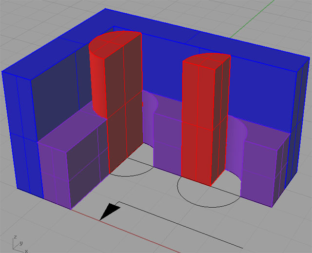

Cutter Engagement Angle and HSM Toolpaths
What is Cutter Engagement Angle and Why Should You Care?
Unless you live under a rock, you will have heard of the fancy HSM toolpaths that control Cutter Engagement Angle and allow much faster machining. Perhaps you even use a CAM program capable of generating such toolpaths. But have you ever wondered why they can go so fast?
First, let's define our terms. What is Cutter Engagement Angle, or CEA (also called Tool Engagement Angle or TEA)? Consider the following schematic:

Entering a corner doubles the cutter engagement...
It depicts a cutter (red) in two different positions as it is removing some material (purple) down in a pocket (blue). We are cutting at 1/2 the diameter cut width, as you can see from the diameter circles under the cutters. We define the cutter engagement angle as the angle of the cutter that is actually cutting at any point in time. That corresponds to the red I've drawn for the cutter. As the cutter moves along the way it has a 90 degree engagement angle. But as it moves into the corner, the CEA rapidly increases to a whopping 180 degrees.
We've all had the experience of a cut that had a tendency to chatter, or even break cutters in the corners. Looking at the Cutter Engagement Angle graphically shows us what's happening in the corners is that cutting forces are going way up to 2x as high as they had been on the straight line paths. Worse, this is not a gradually increase, the cutting forces skyrocket within the very short distance the cutter moves to fully engage the corner. If we had been able to ramp gently up over a reasonably long period of time, instead of shocking the cutter suddenly, we might have gotten away with it. But the combination of the sudden shock and the amount of increase in cutting force is enough to cause us problems.
Recommended Speeds and Feeds versus Constant CEA
When you go to look up a manufacturer's recommended feeds and speeds, that manufacturer has to assume you don't have a fancy CAM program that avoids creating toolpaths with corners. They assume you may have corners galore, hence they have to be conservative. If a certain amount of time is spent cutting corners, they have to give you a speed and feed recommendation that's quite a bit more conservative. If they don't, and you use their recommendations on a toolpath that includes cutters, you're going to be breaking cutters, chattering like crazy, and in general, hating that manufacturer's cutters. So they go conservative.
How conservative do they have to be?
Well, we've seen that cutter engagement doubles in a 90 degree bend, so one could argue they could divide the speeds and feeds by two. If they divided them both by 2, and I'll explain in a minute why that might make sense), we'd have toolpaths that run 1/4 as fast in terms of material removal rate. In other words, if we halve the surface speed (SFM) and halve the chiploads (IPT), we get 1/4 the feedrate.
That's a little too crazy, though, so to figure out what safety factor they use, you could compare manufacturer's recommendations (I go through them constantly as I do the research needed for my G-Wizard Feeds and Speeds Calculator) with the feeds and speeds reported for various HSM toolpaths. What's the right number?
Like Harry Callahan says, you have to ask yourself, "Do you feel lucky?" In that vein, we find HSM recommendations anywhere from 1.5 to 4x faster. I guess the 4x guys really do feel lucky, or more likely, they have tuned they cutting data knowledge base to the point where they're right at the edge of the safe envelope. The 1.5x guys are being more conservative. As I understand it, not all HSM toolpaths are equal, and some do a better job keeping constant CEA than others. Not to mention, the 1.5x number is probably not hand tuned by trial and error and may involve other factors that are specific to the jobs, machinery, and cutters at hand.
Let's talk for a minute about how to apply those factors to chipload versus surface speed. In theory, Constant CEA, provided it is low enough, is helpful to either one. Consider surface speed, which is all about not burning up the cutter. To much SFM, and your cutter gets too hot, it dulls quickly, and is ruined. So SFM is primarily about wear and tool life. CEA impacts SFM because the complement of the CEO, 360 degrees minus the CEA, is the amount of angle the cutter has to cool by being exposed to air and coolant instead of being buried in the cut. With a low CEA, the cutter can go quite a lot faster because it has a correspondingly longer fraction of each revolution to cool off before it has to jump back in the cut and start getting hot again. Referring back to our schematic of a cutting going around a corner, the cutter gets 1/2 the cooling time in a corner that it had on a straight line cut with a 1/2 diameter stepover.
What about chipload? Too much chipload breaks cutters. If they don't snap right off then they chip. Too much chipload is also problematic for chip clearance. High chiploads mean larger chips which fill up the gullet (free space between the flutes) more. Recutting chips is bad for any cutter, especially if you cutting some work hardening material like stainless as those chips can turn into little work hardened bits that hammer the poor cutter mercilessly. So here again, reducing CEA, helps make for a happier cutter. Think of the cutter breakage as being a function of cutting force. Think of CEA as being an angle that determines how many of the cutter's flutes are working during a single revolution. If we reduce the engagement angle, we get fewer flutes generating less force, and we create more room for chip evacuation.
Only the cutter manufacturers can tell you for sure exactly what the individual safety factors are for chipload versus SFM, so let's just assume they're equal. The we can take the earlier figure, that HSM toolpaths run 1.5 to 4x faster, and take the square root to see that the safety factor on each (chipload and SFM) is in the neighborhood of 1.2 to 2x all other things being equal.
That means that if you calculate your feeds and speeds conventionally, and you wanted to know how fast you could go with an HSM toolpath, you could consider going 1.2 to 2x faster on SFM and 1.2 to 2x faster on chipload. How can you decide where to go within that range? I'll tell you in a minute, but for now, realize that it's complicated (I bet you suspected that might be the case!). Before I get into that, I want to go over these fancy toolpaths so you can get some idea how they work.
Constant Engagement Angle Toolpaths: Two Approaches
Modern High Speed Machining (HSM) toolpaths avoid the pitfalls of corners by not creating toolpaths that have any corners. That's easier said than done, if you think about it, because most pocketing and even a lot of profiling involves lots of corners. How can we avoid them and still wind up with a pocket that has corners?
There are essentially two approaches:
- I can take a conventional toolpath, and change the parts that have corners to do something clever. Approaches like Trochoidal Toolpaths and Corner Peeling use this method.
- I can use some special algorithms to create a toolpath that just never lets itself be drawn into a corner. It pulls off early with a kind of looping path instead.